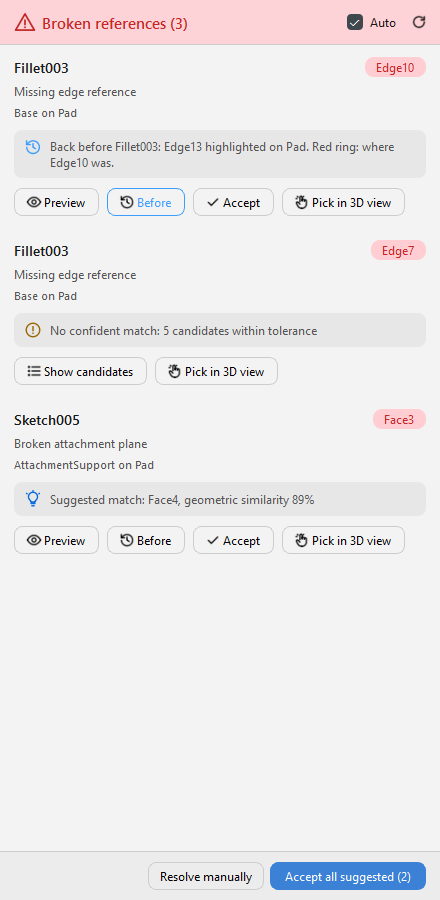
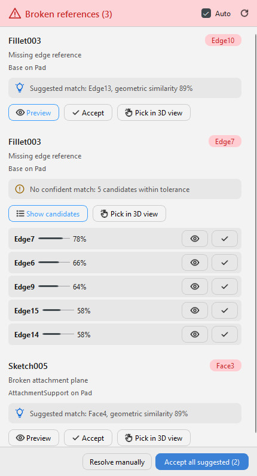
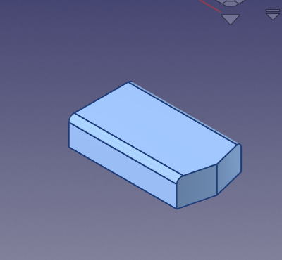
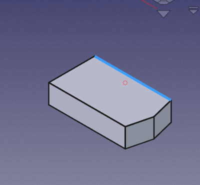

FreeCAD addon · how it works
Resolve_Mode internals
How a pure-Python addon finds PartDesign references that the topological naming algorithm could not keep, suggests replacements by geometric similarity, and relinks them, without storing any old shapes.
What it does
When a recompute leaves a feature pointing at an edge or face that no longer exists, Resolve_Mode opens a panel listing every broken reference. Each one gets one of three outcomes:
- suggest one element clearly matches what was referenced before. Preview shows the feature as it would regenerate, Before shows the element on the model as it was before that feature, and you accept it, or accept all suggestions at once.
- ambiguous several elements are plausible, for example because an edge was split in two. The panel lists the candidates with their scores, and you choose one.
- none nothing is close enough. You pick the replacement in the 3D view, or open the feature in its normal FreeCAD editor.
The panel opens automatically after a recompute that breaks something. You can switch that off in the panel or in the preferences, and open the panel from the PartDesign toolbar instead.


Pipeline
A single document observer drives everything. Observer slots only record which document changed. The actual work runs on the Qt event loop after the recompute has finished, and is postponed while doc.Recomputing is true, because FreeCAD pumps events during a recompute.
Detecting broken references
The scan covers every PartDesign::* feature, every sketch, and anything else inside a PartDesign::Body. For each, it reads all properties whose type starts with App::PropertyLinkSub: fillet and chamfer Base, pocket and pad UpToFace, AttachmentSupport, pattern directions, mirror planes, sketch ExternalGeometry, and so on. It only looks at Edge, Face and Vertex entries.
An entry counts as broken when either of these is true:
- FreeCAD marked it missing. When the element map can't resolve the stored mapped name, the Python value carries a
?prefix:>>> App.ActiveDocument.Fillet.Base (<PartDesign::Pad>, ['Edge4', 'Edge7', '?Edge10', 'Edge15']) - The index is out of range for the target shape, for example
Face9on a shape that now has 7 faces.
If the target itself failed to recompute, the reference is marked blocked and isn't matched. Its geometry isn't trustworthy until the upstream feature is fixed. Once that happens, the next scan picks it up with real candidates, so cascades resolve top-down.
Fingerprints instead of old shapes
Matching needs to know what the lost element looked like. Resolve_Mode doesn't keep the old shape. After every successful recompute, it stores a small fingerprint of each referenced element:
| Field | Edge | Face | Vertex |
|---|---|---|---|
t type | curve class (Line, Circle, BSplineCurve…) | surface class (Plane, Cylinder…) | Point |
s size | length | area | none |
c centre | centre of mass | point | |
d direction | line direction or circle axis (unsigned) | oriented plane normal, or cylinder/cone axis | none |
r radius | circle radius | cylinder or sphere radius, torus major radius | none |
They live in one hidden App::PropertyMap called ResolveModeSignatures on the referencing feature, keyed by property|target|element. Here are the actual entries from the test model:
Base|Pad|Edge13 {"c":[10.0,12.0,5.0],"d":[-1.0,0.0,0.0],"k":"Edge","r":null,"s":20.0,"t":"Line"}
AttachmentSupport|Pad|Face4 {"c":[10.0,12.0,2.5],"d":[-0.0,1.0,-0.0],"k":"Face","o":true,"r":null,"s":100.0,"t":"Plane"}Details that matter:
- Property status is
Hidden | Output | NoRecompute. Writing it never touches the feature and never triggers a recompute (this is covered by a test). - Broken entries keep their pre-break fingerprint. On the first capture after a break, the old fingerprint moves to a
?-prefixed key (Base|Pad|?Edge10). A healthy reference that later gets renumbered toEdge10therefore can't overwrite it. - Timing: capture runs after each document recompute, after undo and redo, and when a save starts, so files saved without a recompute are covered too. It only writes when something changed.
- No addon, no problem: it's a standard dynamic property, so the file opens normally in a FreeCAD without Resolve_Mode.
Matching
For a broken reference, every element of the same kind on the same target is fingerprinted on the fly and scored against the stored fingerprint. Elements already used by other entries of the same property are skipped, so a fillet never suggests an edge it already has. The score is a weighted mean of the components both fingerprints have. Missing components are left out and the remaining weights renormalized.
| Component | Weight | Score |
|---|---|---|
| position | 0.35 | exp(−distance / (0.25 × model diagonal)), so geometry that moved with a dimension change still scores well |
| size | 0.25 | min/max of length or area |
| type | 0.15 | 1 if the same class, otherwise 0.3 |
| direction | 0.15 | |cos| for axes and lines. For oriented plane normals max(0, cos), so a flipped face scores 0 |
| radius | 0.10 | min/max |
The ranked list is then classified using three thresholds you can change in the preferences:
- suggest: the best score is at least 80% and beats the runner-up by at least 8 points.
- ambiguous: at least one element scores 55% or more, but none qualifies as a suggestion.
- none: nothing reaches 55%.
The runner-up rule is deliberate. When one edge splits into two, both halves score about the same. The panel shows that as "no confident match" instead of guessing.
Fallback for sketches with no stored fingerprint
For a sketch attached in FlatFace mode, the sketch's own placement still records where the face was: Placement × AttachmentOffset⁻¹. The addon builds a plane-only fingerprint from it and scores candidates by their distance to that plane and their normal. This works even on files that broke before Resolve_Mode was installed.
Repair
- Relink rewrites only the broken entry and writes the rest of the property back unchanged, including other entries that are still marked
?and get fixed later (this is tested). Before writing, it checks that the entry still holds the element it was scanned with. If not, it raisesStaleReferenceand nothing is written. - Undo: each action is one transaction (
Resolve_Mode: Edge10 -> Edge13, orrelink 2 referencesfor Accept all), committed before the recompute. - Pick in 3D view temporarily shows the target feature and hides its visible siblings in the Body, so clicks land on the right shape. A selection observer then accepts the first element of the right kind on that target. Visibility is restored afterwards.
- Resolve manually hands the feature to FreeCAD's own editor:
setEdit, or Attachment Editor forAttachmentSupport. - Before (rewind-clock icon) goes back to the model before the feature: it shows the candidate on the feature the reference points at, the geometry the user saw when first picking. That feature is shown and the later features of the Body are hidden. The candidate is drawn in blue as a temporary Coin
SoAnnotation, with a red ring at the old element's centre. - Preview shows the referencing feature as it would regenerate with the candidate. See below.
Preview without committing
references.preview_shape() regenerates one feature in a throwaway transaction:
doc.openTransaction("Resolve_Mode preview")
write_groups(obj, prop, groups_with_candidate) # other broken entries of the property left out
obj.recompute() # this feature only, not its dependents
shape = obj.Shape.copy()
doc.abortTransaction() # link, shape and placement come back
if it_was_failing and obj.isValid():
obj.recompute() # abort doesn't restore the error flag; this does- Display: a solid result is drawn shaded, with the Body's features hidden, since the visible tip is the stale result. A sketch or datum result is drawn as wires on top of the feature it attaches to.
- No side effects: the controller ignores the recompute signals this produces, so the panel isn't rebuilt and no fingerprints are captured.
- Nothing left behind: no undo or redo entry remains, and the feature's link, shape and error state are unchanged afterwards. These are covered by tests.
- When it's refused: while a task dialog is open, because its transaction would be mixed in.


Questions from the topological naming developers
These come from the forum thread [PROPOSAL] A "Broken References" resolver panel (August 2026).
Doesn't this need the old shape stored before every change? How do you avoid using too much RAM?
raised by hypocritical (drwho495)
if we need to store the old shape before any changes, how will we do that without using up too much RAM?
No shapes are stored, old or new. Only referenced elements get a fingerprint: a handful of numbers, measured at 92–119 bytes per entry as JSON in the test models. A model with 1,000 element references carries about 100 kB of strings, inside the compressed .FCStd. While the model is healthy, nothing is kept in memory beyond that property. Candidate fingerprints are computed only for the target of a broken reference, while the panel is building, and then discarded.
Is this UI-only work, or does it need an API addition first?
raised in the thread
It's UI-only. Everything uses Python APIs FreeCAD already has:
- the
?marker on missing sub-element names Shape.countElement/getElementCenterOfMass,Curve,Surface- dynamic properties with status bits
- document observers and transactions
- Coin through pivy
No C++ changes are needed. If this moved into core, the matcher would be a natural fit for App::GeoFeature, next to findSimilarNames.
Shouldn't references that go missing be fixed in the topological naming algorithm instead?
raised by hypocritical (drwho495)
References going missing when they shouldn't is an issue that should be dealt with in the topological naming algorithm (and maybe in the name matcher).
Agreed, and Resolve_Mode doesn't compete with it. It only acts on references FreeCAD has already given up on. The common case is the one MisterMaker describes: the user removed or redrew the geometry, so the element legitimately no longer exists and no naming algorithm should invent a mapping. Every improvement to the naming algorithm shrinks the set of references Resolve_Mode ever sees, which is the goal.
How does it relate to doNamesMatch / findSimilarNames from the V2 PR?
raised by hypocritical (drwho495)
They run at different stages. The V2 name matcher decides whether two names mean the same element and returns a yes or no. Resolve_Mode starts only after that has failed, and compares geometry: it ranks elements and gives a confidence. As drwho495 notes, the name matcher has no useful information to return when names don't match. Resolve_Mode fills that gap with type, size, position, direction and radius.
These methods aren't exposed in the 27.1 dev build tested here (2026.11.04). If they land, Resolve_Mode needs no change: anything they resolve never shows up with a ?.
FreeCAD doesn't tell users that something broke.
MisterMaker, and issues #20686, #27546
the software pretty much need to take them by the hand sit them down and tell them to FIX IT before they make a mess of it.
That's the reason for auto mode, which is on by default. After any recompute that leaves a broken reference, the panel opens once with the list. It doesn't nag: if the user closes it, it stays closed until the set of broken references changes. A checkbox in the panel header turns auto mode off.
Would a unified selection system change this?
raised by hypocritical (drwho495)
It would make "Pick in 3D view" simpler. Today the addon briefly shows the target feature so the user's click resolves to the right object. With a selection system that can resolve a click on the tip into an element of an earlier feature, that step goes away. Detection and matching are independent of selection.
Can there be a simplified version without stored data?
MisterMaker
if this can cause issues I would say we make a simplified version without it.
Yes. Fingerprints are a preference (Remember the geometry of referenced elements). Without them you still get detection, the auto-opening panel, blocked and cascade handling, pick in 3D, Resolve manually, and the sketch-plane fallback. Only the suggestions for edges and faces depend on stored data.
What does it cost on large models?
anticipated
Capture is linear in the number of element references. For each one it reads the element and computes its centre of mass, length or area. It runs once per finished recompute, debounced, never during the recompute. Matching is linear in the number of elements of one kind on one target, and only runs for broken references when the panel is shown.
Limitations
- Fingerprints are local, not topological. Adjacency isn't compared, so two congruent, nearby elements can tie. The tie shows up as "ambiguous" rather than a wrong suggestion, but a smarter tie-breaker using neighbouring faces would help.
- Splits and merges have no single answer. A reference to an edge that became two edges is always ambiguous, by design.
- History starts at install. References that were already broken when the addon first saw the file have no fingerprint. Only the sketch-plane fallback and manual picking work for those.
- Same target only. A broken entry is relinked to an element of the same object it pointed to. Switching a reference to a different feature still needs the feature's own editor.
- Scope. PartDesign objects only. Part workbench features, Assembly joints and Draft are not scanned.
- Pick mode toggles visibility. Visibility is restored afterwards, but the document may be marked modified.
Code map
| File | Responsibility |
|---|---|
core/signature.py | Fingerprint format, score(), classify(). Pure Python with no FreeCAD dependency, unit-tested. |
references.py | Scope, reading and writing link properties, detection, capture, candidates, relink(), preview_shape(), transactions. Console-safe (no GUI imports). |
gui/controller.py | Document observer, debounce, auto-open, applying fixes, dismissed-state tracking. |
gui/panel.py | The dock widget and cards. Colors come from the Qt palette, so light and dark themes both work. |
gui/highlight.py | Coin overlays for Before and Preview. |
gui/isolate.py | Temporarily hides and shows Body features, and restores them. Shared by picking and both preview modes. |
gui/picker.py | Selection observer for Pick in 3D view. |
init_gui.py | Registers the command, the PartDesign toolbar (through a workbench manipulator), the Tools menu entry, the preference page and the observer. |
Tests
tests/test_signature.py: pytest, no FreeCAD needed. Covers scoring and classification: moved versus far geometry, flipped normals, radius, the plane fallback, and JSON round-trips.tests/fc_scenario.py: run withfreecadcmd tests/fc_scenario.py. Builds real PartDesign models and breaks them by redrawing sketch geometry. It checks that:- fingerprints survive the break and capturing doesn't touch the feature
- moved geometry is suggested and split geometry isn't
- several broken entries in one property are handled
- relinking works and each relink is one undo step
- the sketch-plane fallback produces candidates
- a preview regenerates the feature and leaves the link, error state and undo history untouched
python -m pytest -q tests
freecadcmd tests/fc_scenario.py